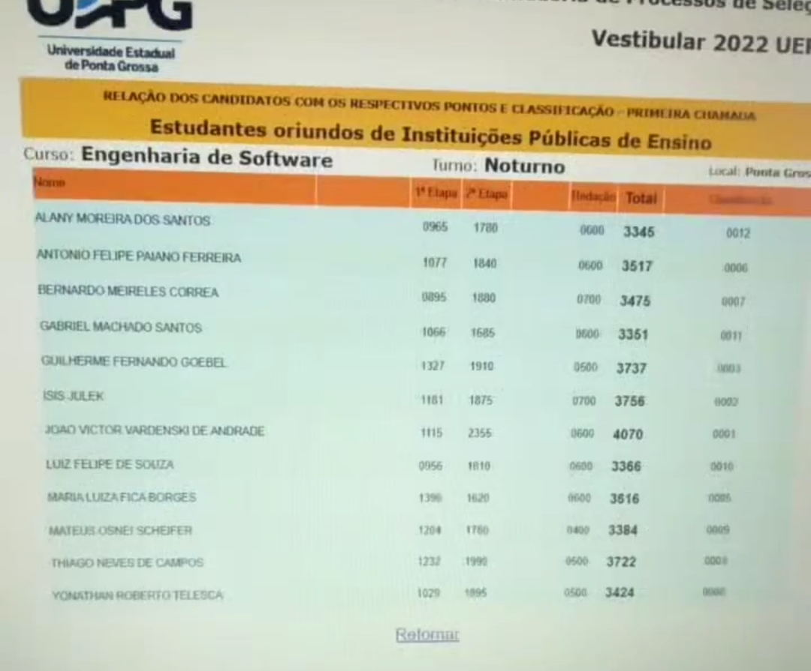

22 de dezembro de 2022
Aprovação em Engenharia de Software da UEPG

Esta sempre foi minha meta, por ser um curso novo e atualizado, sempre prezei em passar nesse curso, então esse foi um grande marco na minha vida, sem dúvidas uma das minhas maiores conquistas.